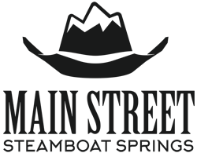

<!DOCTYPE html>
<head>    
    <meta http-equiv="content-type" content="text/html; charset=UTF-8" />
    <script>L_PREFER_CANVAS=false; L_NO_TOUCH=false; L_DISABLE_3D=false;</script>
    <script src="https://cdn.jsdelivr.net/npm/leaflet@1.3.4/dist/leaflet.js"></script>
    <script src="https://ajax.googleapis.com/ajax/libs/jquery/1.11.1/jquery.min.js"></script>
    <script src="https://maxcdn.bootstrapcdn.com/bootstrap/3.2.0/js/bootstrap.min.js"></script>
    <script src="https://cdnjs.cloudflare.com/ajax/libs/Leaflet.awesome-markers/2.0.2/leaflet.awesome-markers.js"></script>
    <link rel="stylesheet" href="https://cdn.jsdelivr.net/npm/leaflet@1.3.4/dist/leaflet.css"/>
    <link rel="stylesheet" href="https://maxcdn.bootstrapcdn.com/bootstrap/3.2.0/css/bootstrap.min.css"/>
    <link rel="stylesheet" href="https://maxcdn.bootstrapcdn.com/bootstrap/3.2.0/css/bootstrap-theme.min.css"/>
    <link rel="stylesheet" href="https://maxcdn.bootstrapcdn.com/font-awesome/4.6.3/css/font-awesome.min.css"/>
    <link rel="stylesheet" href="https://cdnjs.cloudflare.com/ajax/libs/Leaflet.awesome-markers/2.0.2/leaflet.awesome-markers.css"/>
    <link rel="stylesheet" href="https://rawcdn.githack.com/python-visualization/folium/master/folium/templates/leaflet.awesome.rotate.css"/>
    <style>html, body {width: 100%;height: 100%;margin: 0;padding: 0;}</style>
    <style>#map {position:absolute;top:0;bottom:0;right:0;left:0;}</style>
    
    <meta name="viewport" content="width=device-width,
        initial-scale=1.0, maximum-scale=1.0, user-scalable=no" />
    <style>#map_e13ee00a5aae4d5489d72d57f62a36ac {
        position: relative;
        width: 100.0%;
        height: 100.0%;
        left: 0.0%;
        top: 0.0%;
        }
    </style>
</head>
<body>    
    
    <div class="folium-map" id="map_e13ee00a5aae4d5489d72d57f62a36ac" ></div>
</body>
<script>    
    
    
        var bounds = null;
    

    var map_e13ee00a5aae4d5489d72d57f62a36ac = L.map(
        'map_e13ee00a5aae4d5489d72d57f62a36ac', {
        center: [0, 0],
        zoom: 1,
        maxBounds: bounds,
        layers: [],
        worldCopyJump: false,
        crs: L.CRS.EPSG3857,
        zoomControl: true,
        });

    
    
    var tile_layer_baf9ad53645e4169b1877a444da13a88 = L.tileLayer(
        'https://{s}.tile.openstreetmap.org/{z}/{x}/{y}.png',
        {
        "attribution": null,
        "detectRetina": false,
        "maxNativeZoom": 18,
        "maxZoom": 18,
        "minZoom": 0,
        "noWrap": false,
        "opacity": 1,
        "subdomains": "abc",
        "tms": false
}).addTo(map_e13ee00a5aae4d5489d72d57f62a36ac);
    
        var marker_a744f8feebc842838614740105768d14 = L.marker(
            [40.482185, -106.830005],
            {
                icon: new L.Icon.Default()
                }
            ).addTo(map_e13ee00a5aae4d5489d72d57f62a36ac);
        
    
            var popup_e1e868b34f574d09b88fa02c967c4c26 = L.popup({maxWidth: '300'
            
            });

            
                var html_7b689b181c35451f98fb4237af2c441d = $(`<div id="html_7b689b181c35451f98fb4237af2c441d" style="width: 100.0%; height: 100.0%;"><p style="font-weight: bold; font-size: 160%;">This is the start of Yampa Street:  What do you want to see here?</p><p style="font-size: 160%;">Add your comments and photos on our <a href="https://www.facebook.com/MainstreetSteamboat/" target="_blank">Facebook Page</a>.</p><p></p> <p style="font-weight: bold; font-size: 160%;"><a href="https://www.surveymonkey.com/r/YampaRE" target="_blank">Take the survey</a></p><p></div>`)[0];
                popup_e1e868b34f574d09b88fa02c967c4c26.setContent(html_7b689b181c35451f98fb4237af2c441d);
            

            marker_a744f8feebc842838614740105768d14.bindPopup(popup_e1e868b34f574d09b88fa02c967c4c26)
            ;

            
        
    
        var marker_9cb5ac80ef274e2f9c23e0f8d87028ac = L.marker(
            [40.487809999999996, -106.83966699999999],
            {
                icon: new L.Icon.Default()
                }
            ).addTo(map_e13ee00a5aae4d5489d72d57f62a36ac);
        
    
            var popup_cb2dab6fadc34cb6a61b46ff81934d2f = L.popup({maxWidth: '300'
            
            });

            
                var html_5f2d2a0a49f54c5e82e0117176d724e6 = $(`<div id="html_5f2d2a0a49f54c5e82e0117176d724e6" style="width: 100.0%; height: 100.0%;"><p style="font-weight: bold; font-size: 160%;">This is the end of Yampa Street:  What do you want to see here?</p><p style="font-size: 160%;">Add your comments and photos on our <a href="https://www.facebook.com/MainstreetSteamboat/" target="_blank">Facebook Page</a>.</p><p></p> <p style="font-weight: bold; font-size: 160%;"><a href="https://www.surveymonkey.com/r/YampaRE" target="_blank">Take the survey</a></p><p></div>`)[0];
                popup_cb2dab6fadc34cb6a61b46ff81934d2f.setContent(html_5f2d2a0a49f54c5e82e0117176d724e6);
            

            marker_9cb5ac80ef274e2f9c23e0f8d87028ac.bindPopup(popup_cb2dab6fadc34cb6a61b46ff81934d2f)
            ;

            
        
    
        var marker_e3c0e7e4e67e4863a6185d27f5585873 = L.marker(
            [40.483196, -106.832457],
            {
                icon: new L.Icon.Default()
                }
            ).addTo(map_e13ee00a5aae4d5489d72d57f62a36ac);
        
    
            var popup_319dd1a016d14e92b3a81e6d15341080 = L.popup({maxWidth: '300'
            
            });

            
                var html_5edafdec17d3409d8db49a73b14b66a2 = $(`<div id="html_5edafdec17d3409d8db49a73b14b66a2" style="width: 100.0%; height: 100.0%;"><p style="font-weight: bold; font-size: 160%;">How can we improve this access to Howelsen Hill?</p><p style="font-size: 160%;">Add your comments and photos on our <a href="https://www.facebook.com/MainstreetSteamboat/" target="_blank">Facebook Page</a>.</p><p></p> <p style="font-weight: bold; font-size: 160%;"><a href="https://www.surveymonkey.com/r/YampaRE" target="_blank">Take the survey</a></p><p></div>`)[0];
                popup_319dd1a016d14e92b3a81e6d15341080.setContent(html_5edafdec17d3409d8db49a73b14b66a2);
            

            marker_e3c0e7e4e67e4863a6185d27f5585873.bindPopup(popup_319dd1a016d14e92b3a81e6d15341080)
            ;

            
        
    
        var marker_c3631d983dd44ae4b65251d60d0ee205 = L.marker(
            [40.484680499999996, -106.8344002],
            {
                icon: new L.Icon.Default()
                }
            ).addTo(map_e13ee00a5aae4d5489d72d57f62a36ac);
        
    
            var popup_bea0f01177b645d280f574a2ec6d84b2 = L.popup({maxWidth: '300'
            
            });

            
                var html_6c357c2b754c41cab1bd9a7118513a82 = $(`<div id="html_6c357c2b754c41cab1bd9a7118513a82" style="width: 100.0%; height: 100.0%;"><p style="font-weight: bold; font-size: 160%;">Is this a good place for another river crossing?</p><p style="font-size: 160%;">Add your comments and photos on our <a href="https://www.facebook.com/MainstreetSteamboat/" target="_blank">Facebook Page</a>.</p><p></p> <p style="font-weight: bold; font-size: 160%;"><a href="https://www.surveymonkey.com/r/YampaRE" target="_blank">Take the survey</a></p><p></div>`)[0];
                popup_bea0f01177b645d280f574a2ec6d84b2.setContent(html_6c357c2b754c41cab1bd9a7118513a82);
            

            marker_c3631d983dd44ae4b65251d60d0ee205.bindPopup(popup_bea0f01177b645d280f574a2ec6d84b2)
            ;

            
        
    
        var marker_51d75332a72b4ddc894fab1e2108dd44 = L.marker(
            [40.485006, -106.8349346],
            {
                icon: new L.Icon.Default()
                }
            ).addTo(map_e13ee00a5aae4d5489d72d57f62a36ac);
        
    
            var popup_8ccfbc7371984d949c64309747e3d982 = L.popup({maxWidth: '300'
            
            });

            
                var html_3b788110af9349858b85d66521e341b4 = $(`<div id="html_3b788110af9349858b85d66521e341b4" style="width: 100.0%; height: 100.0%;"><p style="font-weight: bold; font-size: 160%;">What kinds of gathering spots – to sit and linger – would you like to see on Yampa Street?</p><p style="font-size: 160%;">Add your comments and photos on our <a href="https://www.facebook.com/MainstreetSteamboat/" target="_blank">Facebook Page</a>.</p><p></p> <p style="font-weight: bold; font-size: 160%;"><a href="https://www.surveymonkey.com/r/YampaRE" target="_blank">Take the survey</a></p><p></div>`)[0];
                popup_8ccfbc7371984d949c64309747e3d982.setContent(html_3b788110af9349858b85d66521e341b4);
            

            marker_51d75332a72b4ddc894fab1e2108dd44.bindPopup(popup_8ccfbc7371984d949c64309747e3d982)
            ;

            
        
    
        var marker_7f0dbeb943114d9aa8f5720dc9a46d8d = L.marker(
            [40.485961700000004, -106.8365574],
            {
                icon: new L.Icon.Default()
                }
            ).addTo(map_e13ee00a5aae4d5489d72d57f62a36ac);
        
    
            var popup_0f31e651c5d246fc90105e01988b3de0 = L.popup({maxWidth: '300'
            
            });

            
                var html_8f8f3e94e49f482ba735baa5b3f31add = $(`<div id="html_8f8f3e94e49f482ba735baa5b3f31add" style="width: 100.0%; height: 100.0%;"><p style="font-weight: bold; font-size: 160%;">Would you support closing Yampa Street to traffic for certain events?</p><p style="font-size: 160%;">Add your comments and photos on our <a href="https://www.facebook.com/MainstreetSteamboat/" target="_blank">Facebook Page</a>.</p><p></p> <p style="font-weight: bold; font-size: 160%;"><a href="https://www.surveymonkey.com/r/YampaRE" target="_blank">Take the survey</a></p><p></div>`)[0];
                popup_0f31e651c5d246fc90105e01988b3de0.setContent(html_8f8f3e94e49f482ba735baa5b3f31add);
            

            marker_7f0dbeb943114d9aa8f5720dc9a46d8d.bindPopup(popup_0f31e651c5d246fc90105e01988b3de0)
            ;

            
        
    
        var marker_9836b2a20582466792531d384277626a = L.marker(
            [40.4865669, -106.83762409999999],
            {
                icon: new L.Icon.Default()
                }
            ).addTo(map_e13ee00a5aae4d5489d72d57f62a36ac);
        
    
            var popup_2e6775a3a3a74bad901b8f736a36a5c6 = L.popup({maxWidth: '300'
            
            });

            
                var html_e9561ab87ddd4fda81ece037fd1dbde1 = $(`<div id="html_e9561ab87ddd4fda81ece037fd1dbde1" style="width: 100.0%; height: 100.0%;"><p style="font-weight: bold; font-size: 160%;">What would be other good places to connect to the Core Trail?</p><p style="font-size: 160%;">Add your comments and photos on our <a href="https://www.facebook.com/MainstreetSteamboat/" target="_blank">Facebook Page</a>.</p><p></p> <p style="font-weight: bold; font-size: 160%;"><a href="https://www.surveymonkey.com/r/YampaRE" target="_blank">Take the survey</a></p><p></div>`)[0];
                popup_2e6775a3a3a74bad901b8f736a36a5c6.setContent(html_e9561ab87ddd4fda81ece037fd1dbde1);
            

            marker_9836b2a20582466792531d384277626a.bindPopup(popup_2e6775a3a3a74bad901b8f736a36a5c6)
            ;

            
        
    
        var marker_4a1e67955ab44f1c8a84b235ca9fd1ac = L.marker(
            [40.484010999999995, -106.833307],
            {
                icon: new L.Icon.Default()
                }
            ).addTo(map_e13ee00a5aae4d5489d72d57f62a36ac);
        
    
            var popup_f6fd779bad944bb9a53ec51579f14e95 = L.popup({maxWidth: '300'
            
            });

            
                var html_3d73167d8fa24494b3c1ac778fe7ed05 = $(`<div id="html_3d73167d8fa24494b3c1ac778fe7ed05" style="width: 100.0%; height: 100.0%;"><p style="font-weight: bold; font-size: 160%;">What are some of your favorite things about Yampa Street?</p><p style="font-size: 160%;">Add your comments and photos on our <a href="https://www.facebook.com/MainstreetSteamboat/" target="_blank">Facebook Page</a>.</p><p></p> <p style="font-weight: bold; font-size: 160%;"><a href="https://www.surveymonkey.com/r/YampaRE" target="_blank">Take the survey</a></p><p></div>`)[0];
                popup_f6fd779bad944bb9a53ec51579f14e95.setContent(html_3d73167d8fa24494b3c1ac778fe7ed05);
            

            marker_4a1e67955ab44f1c8a84b235ca9fd1ac.bindPopup(popup_f6fd779bad944bb9a53ec51579f14e95)
            ;

            
        
    
                

                map_e13ee00a5aae4d5489d72d57f62a36ac.fitBounds(
                    [[40.482185, -106.83966699999999], [40.487809999999996, -106.830005]],
                    {}
                    );
            
</script>